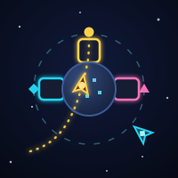
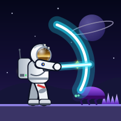
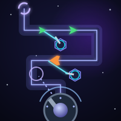
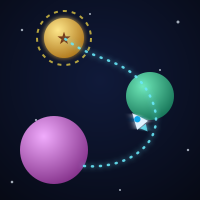

Speedrun puzzle game — Fifteen sealed vaults on an alien moon. Time the laser grids, slip past sentry drones, drift across zero-g fields and reach the airlock before your oxygen runs out. Zone 5’s Legends game.
Puzzle Space Ultra · Zone 5 👑 Legends game Free · no sign-up · no download
Controls: Move: arrows or WASD, or swipe (touch: D-pad) · Restart the vault: Space twice or ⟲ (costs a life).
💡 Clear a vault within half a second of its par time for the Speed of Light badge.
Press P to pause and M to mute. Works on desktop, tablet and phone.
Vault of Stars is game 30 of 42 on Quick Play Arcade, in Zone 5 · Beyond (Ultra difficulty). Every game is open to everyone; the zones are the recommended order, and playing all six games of a zone completes it.
Vault of Stars is Zone 5 · Beyond's Legends game. Start at vault 1 and clear all 15 without losing a life. Something is waiting beyond vault 15… Win the egg to enter the Hall of Legends — and all 5 Golden Eggs together win the Golden Crown.
“Legends say something deep inside the moon is still sending a signal…”
Win the zone's Golden Egg and Vault of Stars unlocks a golden character: the Golden Astronaut.

Space · Arcade · Puzzle
Space-traffic control. Ships warp in from the void: drag each one a flight path to the docking bay of its colour, keep the lanes crossing-free, and never let two hulls touch.

Action · Space
Explore alien planets as a lone astronaut. Fight with an energy blade and a blaster, find double jump, dash and wall-cling, buy upgrades at rest beacons, and beat the guardian on every fifth planet.

Space · Action
Hold the lane. Build lasers, missile pods, cryo beams and tesla coils beside a glowing space lane, then fire the station cannon yourself as raiders, tanks and motherships pour out of the warp gates.

Space · Arcade · Action
One button, endless sky. Circle a planet, let go at just the right moment and ride gravity from world to world, up to the golden beacon. The void is always waiting.
Browse: Puzzle games · Space games · Legends games · all 31 games